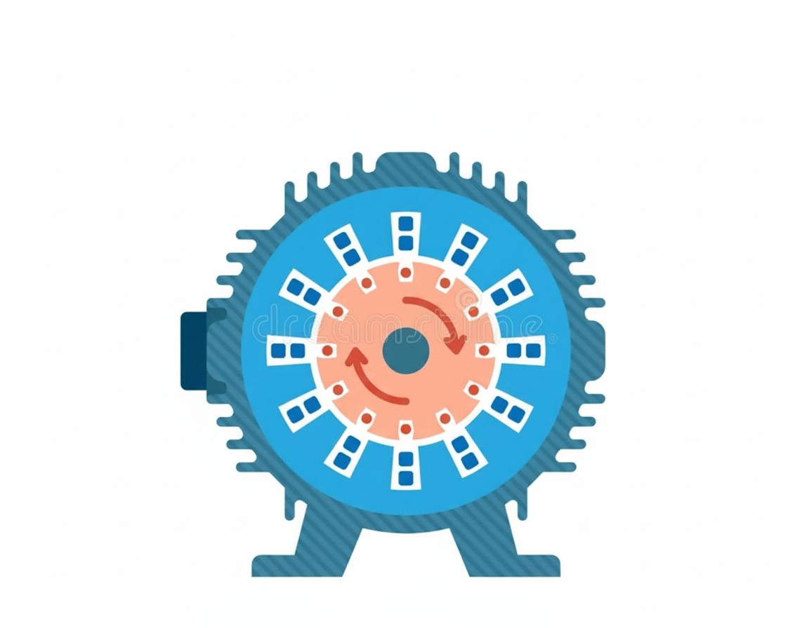

Motores Elétricos
Síncronos, Assíncronos e Suas Aplicações
Resumo Sucinto
Motores elétricos convertem energia elétrica em energia mecânica de rotação. Eles são classificados em síncronos e assíncronos, dependendo de como a velocidade do rotor se relaciona com o campo magnético girante do estator. Enquanto os síncronos mantêm uma velocidade constante, os assíncronos operam com uma pequena diferença de velocidade (escorregamento) para funcionar.
Síncronos vs. Assíncronos: Entendendo as Diferenças
Motores Síncronos
- Velocidade Constante: A velocidade do rotor é a mesma do campo magnético do estator.
- Sem Escorregamento: O rotor "trava" com o campo girante.
- Fator de Potência: Pode ser ajustado, sendo ideal para correção de fator de potência.
- Partida Complexa: Geralmente requer um método de partida auxiliar.
Mostrar imagem
Motores Assíncronos (Indução)
- Escorregamento: A velocidade do rotor é sempre ligeiramente menor que a síncrona.
- Partida Automática: Não precisam de dispositivos auxiliares para iniciar a rotação.
- Construção Simples: Mais robustos, econômicos e amplamente utilizados.
- Fator de Potência: Geralmente operam com fator de potência indutivo (atrasado).
| Característica | Motor Síncrono | Motor Assíncrono |
|---|---|---|
| Velocidade do Rotor | Igual à velocidade síncrona. | Ligeiramente menor que a síncrona. |
| Escorregamento | Zero. | Presente e essencial. |
| Construção | Mais complexa. | Mais simples e robusta. |
| Aplicações | Onde a velocidade constante é crucial, como em geradores. | Aplicações gerais industriais e domésticas. |
Equação do Escorregamento
O escorregamento (s) é a diferença entre a velocidade síncrona (Ns) e a velocidade do rotor (Nr), expressa em porcentagem ou decimal:
Exemplos "Especiais"
Motor Síncrono de Relutância Variável
Este é um motor síncrono que não usa ímãs permanentes ou enrolamentos no rotor. Ele opera através da força de relutância, onde o rotor, feito de material ferromagnético com polos salientes, busca se alinhar com o campo magnético do estator na posição de menor resistência magnética. Isso o torna extremamente robusto e eficiente em altas velocidades.
Aplicações: Máquinas-ferramenta e robótica que exigem controle preciso.
Mostrar imagem

Motor CA Assíncrono Tipo Gaiola de Esquilo com Split-Phase
Um exemplo clássico de motor de indução monofásico. Para gerar um torque de partida, ele utiliza dois enrolamentos: um principal e um auxiliar. O enrolamento auxiliar, com um capacitor ou maior resistência, cria um deslocamento de fase que gera um campo magnético girante para iniciar a rotação. Após atingir uma certa velocidade, um interruptor centrífugo desliga o enrolamento auxiliar.
Aplicações: Eletrodomésticos como máquinas de lavar, ventiladores e compressores.